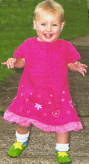

Indigo's Page
Updated 20/07/2001
She has just learned to walk, and is enjoying the new freedom it gives her.
She is also learning to talk. Her first word was star. Below is a summary of Indigo's current thinking: Music
Thoughts
Books
Television
Places
Things
Eating

Indigo is one and a quarter, and therefore needs a little help in setting up her web page.
Indigo's favourite song is Twinkle, Twinkle little Star.
Indigo's current favourite pastime is going up and down stairs.
She also thinks about chocolate a lot.
Indigo's favourite book is currently A Day at the Farm.
Indigo's has made no judgement on television programmes, but laughs when the
daleks talk.
Indigo likes the splash pool at the swimming pool, and being in
wide open fields where she can run around.
Indigo likes cats and will relentlessly try to grab them.
She also likes flowers.
Indigo is not keen on this activity, unless some of her favourite words are involved.